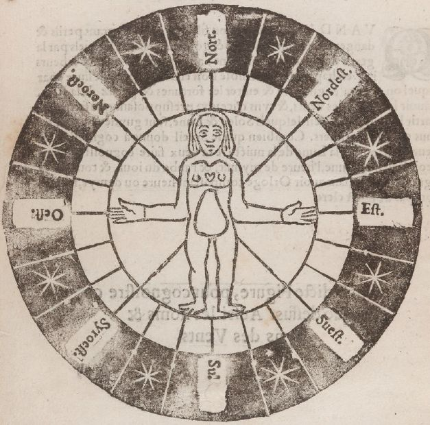
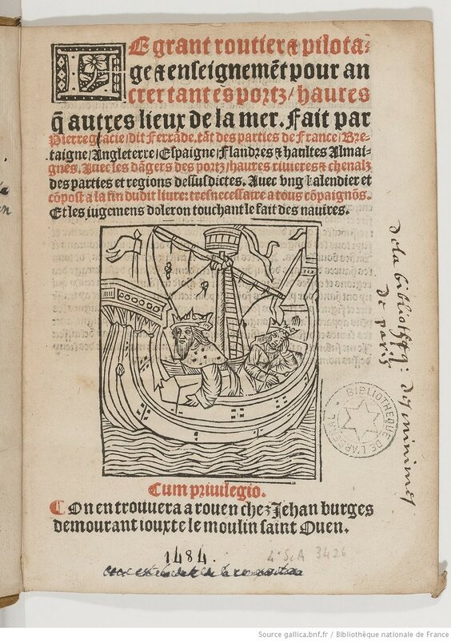
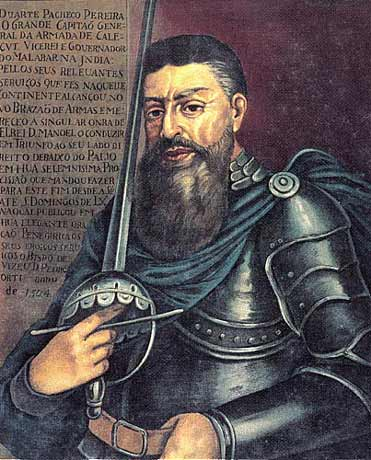
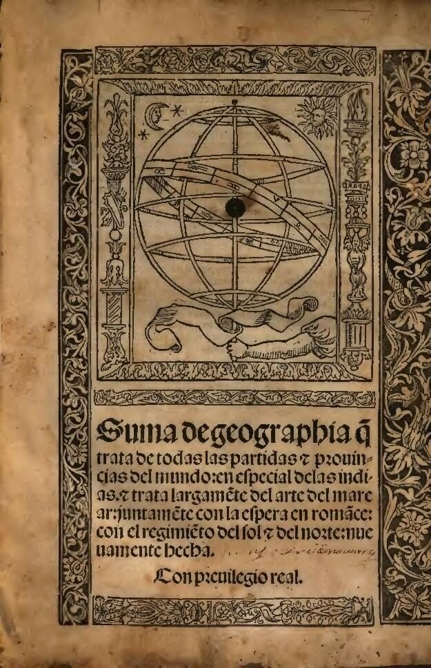

Ротейро, рутье, руттер…
Мрака неизвестности теперь нет: каждый уголок моря, залив, бухта, глубина, подводные камни, каждый берег ― все описано в так называемых лоциях, показано на картах, как кварталы, площади и улицы города.
И. А. Гончаров. Фрегат «Паллада
Итак, в нашем рассказе мы подошли к пятнадцатому и шестнадцатому векам. Казалось бы, наступившая эпоха Великих географических открытий выдвинула на первое место в инструментарии моряков морские карты, на которых они отражали сделанные открытия и намечали маршруты новых плаваний. Но «хайли лайкли» не всегда означает истинную картину развития событий. Текстовые навигационные сборники оставались главным инструментов у моряков вплоть до семнадцатого века..
Португальские мореплаватели называли его roteiro, испанцы – derroterro, французы – routier, англичане, переняв у французов это слово, стали назвать его rutter или ruttier. Голландцы использовали термин leeskaart, немцы – Seebuch. Смысл этих терминов понятен без перевода: в основе большинства из них лежит корень route – дорога, путь (на суше), направление, курс (на море). Перевод голландского термина не такой простой; смысл-то понятен: словесная карта, а буквальный перевод сделать труднее. Lees – от глагола lezen – читать, а kaart, естественно, карта. Перевод немецкого Seebuch вопросов не вызывает. Первоначально эти термины обозначали названия самых первых сборников, сменивших собой портоланы.( Что касается итальянцев, то они упорно сохраняли за своими текстовыми руководствами по навигации название portolani.)

Новые термины появились в морском языке в самом начале шестнадцатого века. вместе с появлением у моряков перечисленных выше стран первых пособий по навигации нового образца, ставших непосредственными предшественниками современных лоций. Произошло это достаточно синхронно, так что теперь и не скажешь, что впервые появлилось: roteiro у португальцев или routier у французов. Вроде бы знаменитый трактат французского навигатора с испанскими корнями Пьера Гарсия, прозванного Ферранд (Pierre Garcie dit Ferrande) Le Grand Routier de la mer был впервые напечатан в Руане в 1502-1503 гг., но исследователи считают, что в рукописном виде он появился в 1483 году.

Титульный лист Le Grant routier et pilotage…, издание 1540 года.
Переведен на английский этот документ был в 1528 году и появился в Англии под названием Rutter of the Sea . Вот кратко и все по истории заимствования англичанами французского термина routier в форме rutter.
А где же здесь место португальскому roteiro? Морские историки почти единогласно утверждают, что наибольший вклад в прогресс навигационной науки в XV-XVI вв. внесли как раз португальцы. Некоторые вообще считают, что они стали основателями научной навигации. Мы, конечно, не будем столь решительны в подобных утверждениях, но тем не менее нельзя отрицать, что именно португальцы впервые использовали метод точного нахождения положения корабля в открытом море по Солнцу, разработали для этого практически удобные правила и солнечные таблицы, усовершенствовали необходимые навигационные инструменты (об этом у нас разговор впереди). И первые португальские Roteiros вне всякого сомнения стали образцом для всех других стран при разработке своих лоций. Хотя не следует забывать, что сразу после того, как в 1434 году португальские корабли обогнули мыс Бохадор (см. наш пост), все отчеты о плавании португальцев в дальних морях были отнесены к государственным секретам, так что для получения доступа к ним иностранцам приходилось хорошенько потрудиться.
Но мы не должны перегибать палку и четко обозначить свою позицию: в морском деле никаких письменных (манускриптов) или печатных документов, датируемых ранее 1500 года, которые носили бы название routier, rutter или roteiro , до нас не дошло. И неубедительными выглядят попытки выдать знаменитый дневник Васко да Гамы 1497 года за первый roteiro. Это был всего лишь дневник путешествия, в котором не приводилось никаких систематических наблюдений или научных заметок, что является отличитительной чертой навигационных пособий нового типа.
Первым «настоящим» roteiro, дошедшим до наших дней принято считать Manuscrito de Valentim Fernandes (1506). Это копия более раннего португальского документа. Издал ее Valentim Fernandes, известный в ту пору немецкий печатник, переехавший в 1495 году в Лиссабон (не исключается, что благодаря его стараниям некоторые секретные документы о географических открытиях португальцев попали ко двору императора Священной Римской империи). Обнаружен текст был в Мюнхене, в манускрипте Relação de Diogo Gomes. Написан roteiro на латыни, простым языком. Он следует традициям итальянских портоланов, являясь в основной своей части руководством по прибрежной навигации. Новым в нем является нанесение широт для основных пунктов побережья.
Итак, подобно тому, как появление компаса привело к переходу от периплов к портоланам, овладение искусством определять широту места корабля в море стало отправным пунктом для перехода от портоланов к roteiro, первоначальной форме лоций. И уже в 1535 году появляется океанский roteiro, руководство по плаванию между Лиссабоном и Индией, составленное навигатором Диего Альфонсо (Diogo Afonso).
Помимо привязки объектов побережья друг к другу и обозначения дистанции между ними в этом документе содержатся описания населенных пунктов, лесных массивов, приметных объектов на берегу. Впервые в навигационной литературе даны наблюдения над морскими животными и птицами для использования их в целях навигации. Записи Диего Альфонсо ограничиваются Гвинейским заливом. Но следующий документ этого типа, так называемый Esmeraldo (Esmeraldo de Situ Orbis), известного португальского деятеля Дуарте Пачеко Перейра, прозванного португальским Ахиллесом (Aquiles Lusitano), охватывает уже все побережье Западной Африки вплоть до мыса Доброй Надежды.

Портрет Дуарте Пачеко Перейра работы неизвестного художника. Biblioteca Nacional de Portugal
Составленный в 1505-1508 гг., документ долго хранился в секрете и был опубликован лишь в 1892 году.
В середине XVI века у английских моряков появилась острая потребность в пособиях, освещающих океанские плавания в Вест-Индию, особенно после неудачного похода Хокинса и Дрейка в Сан-Хуан-де-Улуа в 1568 году. Началась целая кампания по захвату, хищению, покупке и копированию испанских и португальских пособий по навигации. В 1578 году срочно был переведен на английский язык единственный к тому времени испанский печатный derrotero с описанием маршрутов к берегам Вест-Индии Suma de Geographia, опубликованный еще в 1519 году конкистадором и картографом Мартином Фернандесом де Энсисо.

Таким образом появился первый печатный английский руттер, освещавший моря за пределами Европы, первое трансатлантическое пособие по навигации, показывающее американское побережье и прилегающие моря. Он носил название A Briefe Description of the Portes, Creekes, Bayes, and Havens of the Weast India.
Мы не забываем, что целью нашего обзора является попытка осветить навигацию XVI века в елизаветинской Англии, поэтому за бортом остаются (пока) труды итальянских и греческих мореплавателей, а также вклад арабов и моряков Османской империи в эту область кораблевождения. Но было бы неправильным не сказать несколько слов о появлении лоции у русских моряков. Тем более что здесь все очень запущено. Поэтому посвятим данной теме следующий пост. Заодно тогда же поговорим и о первых голландских лоциях.